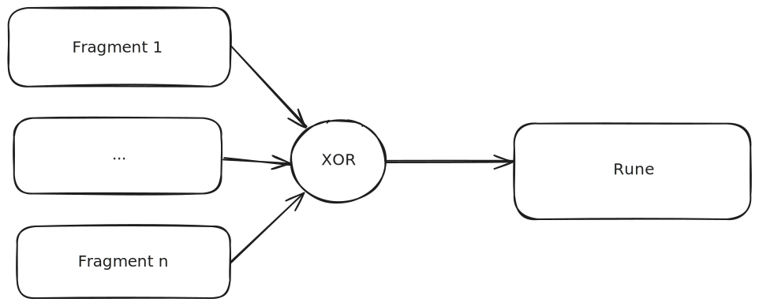

Règles
Retour au menu principal
- Il existe quatre runes : la rune de feu, de l'eau, de l'air et de la terre
- Chaque rune a été divisé en fragment qu'il faut reconstituer comme indiqué sur le schéma
- Trouver les fragments cachés dans le site pour retrouver les quatre runes
